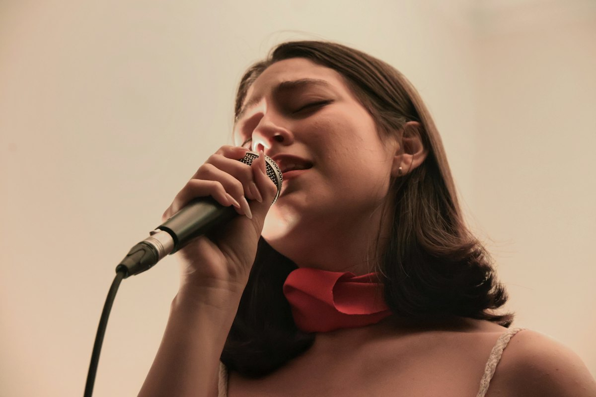

𝄞
The Living Room
Dito nagkikita ang lahat. Pagsalubong sa bagong member, listening nights, at ang mga taong makakasama mong sumulat nang matagal. Dito nagsisimula ang bawat pag-akyat.
Ang clef · BelongSalin ito. Kung may mali, sabihan kami. · Read this in English
Filipino
This page isn't open yet. The English version is ready.
Read it in EnglishIsang bahay para sa songwriters · Manila muna
Ang Gising Sining House ay isang room na puno ng songwriters na dumarating linggo-linggo, sabay-sabay na sumusulat, at nagsasabi sa isa't isa ng totoo tungkol sa gawa. Online araw-araw, simula ngayon. Personal sa Manila simula 2027. Tapos kahit saan pa kailangang isulat ang susunod na kanta.

Ano ito

Karamihan ng songwriters ay mag-isang sumusulat, kakaunti ang natatapos, at walang naririnig na tapat na salita tungkol sa kanta hanggang i-skip ito ng isang estranghero. Hindi problema 'yan ng talento. Problema 'yan ng room.
Inaayos ng Gising Sining House ang room. May weekly prompt ka, may cowrite partner, may feedback circle na nakikinig nang maayos, at, ilang beses sa isang taon, isang totoong bahay kung saan ilang araw kang susulat kasama ang mga taong kasing-seryoso mo.
Walang nangangako ng hit dito. Pero mas marami kang maisusulat, mas marami kang matatapos, at mas marami kang makikilalang makakatulong para marinig ang mga kanta mo.
Ang anim na room · 𝄞 E G B D F
Iisang stave ang inaakyat ng bawat kanta. Limang room ang mga hakbang sa pag-akyat, bawat isa ay isa sa 5 Keys para sa career na tumatagal. Ang ikaanim, ang Living Room, ay ang clef sa simula ng linya: dito nagkikita ang buong bahay.
Dito nagkikita ang lahat. Pagsalubong sa bagong member, listening nights, at ang mga taong makakasama mong sumulat nang matagal. Dito nagsisimula ang bawat pag-akyat.
Ang clef · BelongAng boses mo, ang catalogue mo, ang mga karapatan mo. Sumulat araw-araw sa prompt at i-register ang natatapos mo.
EstablishMga sesyon kasama ang ibang manunulat, artist at producer. Nakikilala mo ang tao sa paggawa ng kanta kasama sila.
GrowWriters' nights kung saan naririnig ng totoong audience ang mga kanta. Unang hakbang mula sa tapos na kanta papunta sa bayad na gig.
BookMaliit na studio para sa demo na nagdadala ng kanta. Sapat para i-pitch, mura para tuloy-tuloy kang gumawa.
DeliverDito pinag-uusapan nang tapat ang negosyo: splits, publishing, fans, at kung paano tumagal nang dekada sa industriya.
FlourishAng mga bahay

14.5995° N, 120.9842° E · Metro Manila, Philippines
Ilan sa pinaka-musikal na tao sa mundo, isang P-pop at OPM scene na mabilis lumalaki, at kultura ng pagsusulat sa English na tumatawid na ng mga border. Ang bahay sa Manila ang home base: writing rooms, maliit na booth, at sala na nagiging listening room tuwing writers' night.
8.5069° S, 115.2625° E · Ubud at Canggu, Indonesia
Apat na oras mula Manila, at matagal nang pangarap ng mga manunulat mula Sydney, London at LA. Ang Bali house ay isang villa na inuupahan namin nang isang linggo kada camp: mga kuwartong pagsusulatan, portable na studio, at mga Indonesian na manunulat sa rotation kasama mo.
Mga camp
Bawat camp ay umiikot sa cowrite rotations. Tuwing umaga, may bago kang kapares na dalawang manunulat at isang producer. Pagdating ng gabi, may tapos ka nang kanta at rough demo. Sa huling gabi, pinapatugtog namin lahat sa harap ng audience.
Labindalawang puwesto bawat camp, tatlong paraan para gawin ito. Bukas ang day camps sa lahat ng level. Para sa mga nakatapos na ng ilang kanta ang two-day at retreat camps.
Ang unang retreat: Camp 01 · Tagaytay · dalawang pod, 10–14 at 17–21 Marso 2027. May founding places para sa members.
Tingnan ang buong campKape, prompt, at mga kapares ngayong araw
Cowrite session sa kuwarto mo
Sabay-sabay na tanghalian
Tapusin ang kanta, tapos scratch demo sa booth
Listening circle: tapat na notes sa bawat kanta
Hapunan, labas ang gitara, kuwentuhan sa porch
Membership
Magbubukas ang online room sa isang libreng founding season. Ang founding members ang unang makakaalam ng lahat ng susunod naming itatayo. Tingnan ang loob ng room.
Librehabang founding season
Para sa mga manunulat kahit saan na gusto ng habit, ng prompt at ng mga kasama.
2027pagbukas ng bahay sa Manila
Para sa mga manunulat na malapit sa bahay at gustong nasa room mismo.
Sa pamamagitan ng aplikasyon
Para sa iilang manunulat bawat season na gustong magtagal sa bahay, pagbukas nito sa 2027.
Bakit ko ito itinatayo
Paulit-ulit, iisa ang dahilan kung bakit humihinto ang magagaling na manunulat. Mag-isa sila sa gawa, at walang nagsasabi sa kanila ng totoo tungkol dito, o tungkol sa pera.
Ang Gising Sining House ang room na umaayos niyan. Mga taong sumusulat linggo-linggo. Tapat na notes. At ang negosyo, ipinapaliwanag nang diretso, para ang mga kantang matatapos mo rito ay kumita para sa 'yo nang maraming taon.
Nagsisimula kami online, ngayon, sa Room. Magbubukas ang bahay sa Manila sa 2027, dahil karapat-dapat ang musika rito sa mas malaking entablado. Tapos Bali, kung saan pwedeng magkita sa gitna ang mga manunulat mula sa magkabilang panig ng Pacific.
Darryl Saunders, host
Visiting mentor
Paul K Saunders ay halos apatnapung taon na sa musika: pirate radio, BBC, A&R sa major label, festivals, management at sarili niyang label. Sumasali siya sa bahay bilang visiting mentor, at siya ang nangunguna sa mga workshop tungkol sa splits, publishing at pagkita sa kanta.
Mga tanong
Hindi. Ang day camps at ang Online Room ay ginawa para sa mga nagsisimula pa lang. Ang mahalaga ay tuloy-tuloy kang dumarating at may tinatapos ka.
Sa 'yo ang buong writer's share, ang royalties na diretsong ibinabayad sa songwriters. Sa mga kantang sabay-sabay na isinulat sa Room o sa camp, 90% ng publishing ay sa mga manunulat at 10% sa bahay, kaya ang cowrite ng tatlo ay 30 / 30 / 30 / 10. Ang 10% ng bahay ang pambayad sa pag-register at pag-pitch ng mga kanta. Ang mga kantang mag-isa mong isinulat ay 100% sa 'yo.
Oo. Araw-araw tumatakbo ang Online Room sa iba't ibang time zone, at ang camps ay ginawa para sa mga bumibiyahe. Tutulungan ka namin kung saan tutuloy.
Walang makakapangako niyan, at mag-ingat ka sa sinumang nangangako. Mas marami kang maisusulat at matatapos, at makikilala mo ang mga taong nagtatrabaho sa industriya. Ikaw ang bahala kung ano ang gagawin mo roon.
Bukas na ngayon ang online room para sa founding season, libre. Susunod ang bahay sa Manila sa 2027. Ang founding members ang unang makakaalam tungkol sa camps.
Makakatanggap ka ng email bago may magbago, at pwede kang umalis anumang oras dala ang lahat ng isinulat mo. Hindi kailangan ng card para sumali.
Founding season
Libre hanggang 31 March 2027. Hindi kailangan ng card. May weekly prompt, feed na puno ng manunulat, at unang say kung ano ang magiging mga bahay.